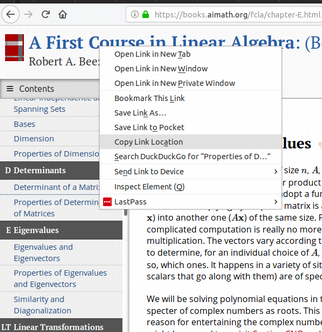

Table of Contents
Instructors can add a link to any section or subsection in the textbook by simply right-clicking on the section in the table of contents and selecting "Copy Link Location" (or similar).

There are some basic capabilities of the PreTeXt-authored textbooks that facilitate their integration in a structured way into the design of a course and in the everyday teaching of a class.
The defining feature of hypertext—and, perhaps, the web in general—is the ability to link from one resource to another. The structure of PreTeXt is ripe for such linking, both internally, as you regularly see with exercises citing theorems and sections referencing previous sections, and externally, as you would do if you were creating a document for your personal use.
Instructors are encouraged to link to relevant parts of the text throughout their course materials (e.g., syllabi, lecture notes, assignments) and also in their feedback to students and on discussion boards in their Learning Management Systems (LMSs). Linking is often as simple as sharing the relevant URL to the particular resource. You can identify the URLs of specific parts of the textbooks in several ways:
Instructors can add a link to any section or subsection in the textbook by simply right-clicking on the section in the table of contents and selecting "Copy Link Location" (or similar).
Instructors can add direct links to more specific items (technically, any division with an @xml:id tag). An easy way to find the relevant link is to locate the item in the index of each textbook. Clicking the item in the index will open a small box (a "knowl") and display the definition of the item. Each box contains an "In Context" link in the lower right. Instructors can right-click this link to copy the URL.
Many divisions in a PreTeXt textbook are decorated with a faint paragraph sign ¶ (known as a "pilcrow"). These pilcrows represent links which center the browser at that division. Once clicked, the URL displayed in the browser's address bar can be copied and used in other documents.
Sage is an open source language for doing mathematics. It is designed to replicate the functionality of popular computer algebra systems (Mathematica, MAPLE, etc.) in a unified, open source environment. It is free, and while it may be downloaded and run locally on a user's personal computer, many PreTeXt authors deploy what are known as Sage Cells which require nothing to be downloaded on the user's end. Examples can be seen below. These are one-off computing environments in which snippets of code can be executed and displayed in a browser without need for any installation of software on the user's part. The code can be altered in any way the user sees fit, and the original content can be restored by reloading the page.
Seriously, these things are great.
For those who wish to demonstrate or experiment further with Sage, AIM 1 The American Institute of Mathematics is a partner of the UTMOST project. also hosts the the Sage Cell Repository. One can compute directly on the home page or explore the dozens of examples compiled in the wiki.